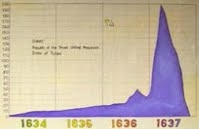
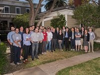
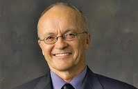
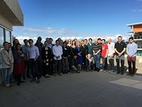
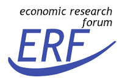
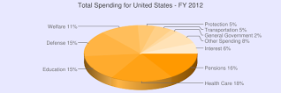
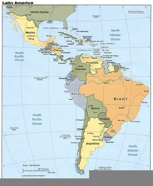

The Laboratory for Aggregate Economics and Finance is pleased to sponsor the second Lab Coat Workshop August 3-4, 2018 at the Upham Hotel Garden Room at 1404 De La Vina Street in Santa Barbara.
The Lab Coat members are a group of macroeconomists who share interests in varied topical research issues. A number of years ago they formed a group which periodically meets to discuss interesting research in which the members are currently engaged. Many of the members have collaborated and continue to collaborate on research over their professional careers. The members represent a number of universities and institutions across the country.
The conference organizers are Thomas Cooley (New York University), Timothy Kehoe (University of Minnesota) and Finn Kydland (UC Santa Barbara).
- Program
- Participants
- History
- Group Photo
XXII Workshop on Dynamic Macroeconomics in Vigo, Spain
July 10-12, 2018
On behalf of the Research Group in Economic Analysis (RGEA) of the Universidade de Vigo and the Scientific Committee it is a great pleasure to announce the XXIII Workshop on Dynamic Macroeconomics sponsored by LAEF which will be held in Soutomaior (Pontevedra, Spain) from 10 to 12 of July, 2018.
The academic organizer is Jaime Alonso-Carrera, Professor of Economics at the University of Vigo. For more information please go to http://workshop.webs.uvigo.es/.
First Women in Macroeconomics Conference
May 17-18, 2018
The Laboratory for Aggregate Economics and Finance (LAEF) at the University of California, Santa Barbara is pleased to announce the first Women in Macroeconomics conference. The meeting will take place in Santa Barbara on May 17th and 18th, 2018. The conference brings together influential female macro-economists working in four research areas: (1) Macroeconomic Theory, (2) Finance and Macroeconomics, (3) International Macroeconomics, and (4) Quantitative Macroeconomics. The academic organizers are Marina Azzimonti (Stony Brook University), Alessandra Fogli (Federal Reserve Bank of Minneapolis) and Veronica Guerrieri (University of Chicago, Booth School of Business).
The New Frontier of Business Cycle Research
March 2-3, 2018
The conference commemorates Thomas Cooley’s edited volume “Frontiers of Business Cycle Research”. The conference will present recent important contributions to business cycle research, and will be the opportunity to discuss the progress made in the field since the book was commissioned 25 years ago. As in Cooley’s volume, the conference will explore applications of dynamic methods to different aspects of the business cycle, including issues related to labor markets, financial factors, fiscal and monetary policies, and international cycles. Organizers are Zachary Bethune, Assistant Professor of Economics at the University of Virginia, Sophie Osotimehin, Assistant Professor of Economics at the University of Virginia, and Eric Young, Professor of Economics at the University of Virginia. The conference will take place at the Upham Hotel Garden room Friday March 2 and Saturday March 3, 2018.
2nd Annual OTC Markets and Securities Conference
October 13-14, 2017
The Laboratory for Aggregate Economics and Finance (LAEF) at the University of California, Santa Barbara is pleased to announce the second LAEF OTC Markets and Securities Conference. The meeting will take place at The Upham Hotel in Santa Barbara, Friday October 13, and Saturday October 14, 2017.
The conference theme will be on three sets of topics: (1) over-the-counter (OTC) markets, market-microstructure, and networks; (2) "corporate finance" issues related to OTC traded securities (e.g. the treatment of derivative and repo contracts in bankruptcy, their effective seniority in bankruptcy, or any other contractual issues surrounding OTC traded securities); (3) the relationship between these topics with the financial crisis and macroeconomics.
Why the Government Does Whatever It Is That The Government Does
October 6-7, 2017
In 2017, the federal government budgeted $4.1 trillion for expenditures, or roughly 22% of GDP. The goal of this conference is to bring researchers together to discuss the effects of such a large and expanding fiscal budget. How should these expenditures be financed? Should fiscal policy have a role in short-term macroeconomic stabilization? Is there a link between budget deficits and inflation? Broadly, we seek to ask “why the government does whatever it is that the government does (and should they be doing it)?”
Money, Banking, and Asset Markets in Madison, WI
September 22-23, 2017
The Puelicher Center for Banking Education and the Wisconsin School of Business invite you to attend a conference on Money, Banking, and Asset Markets in Madison, WI on Friday, September 22nd and Saturday, September 23rd. This event is co-sponsored by the Laboratory for Aggregate Economics and Finance (LAEF). Sessions will be held Friday afternoon beginning at 1:30 pm, and all day Saturday.
Advances in Macro-Finance VIII
September 22-23, 2017
The Tepper School of Business at Carnegie Mellon University and the Laboratory for Aggregate Economics and Finance at the University of California Santa Barbara will hold the 8th conference on Advances in Macro-Finance, designed to bring together leading scholars in the field. This year, the conference will be held in Pittsburgh on Friday September 22 and Saturday September 23, 2017. The conference will consist of selected papers with a formal discussant for each paper.
The focus of the conference is on research at the intersection of macroeconomics and finance. We welcome both theoretical and empirical research on topics including, but not limited to: impact of financial and investment frictions; labor markets; credit risk and corporate financing; models of risk premia; determinants of income and wealth inequality; household finance; and taxation. Preference will be given to recent papers that have not previously been presented at major conferences.
4th Annual Workshop of the Australasian Macroeconomics Society
August 17-19, 2017
Welcome to the 4th Annual Workshop of the Australasian Macroeconomics Society (WAMS). The 2017 edition of the WAMS will be held in Canberra, Australia, and it is jointly organized with the Laboratory for Aggregate Economics and Finance. Invited Speakers: Stephen D. Williamson (St Louis Fed), John Rust (Georgetown University), Greg Kaplan (University of Chicago), Marco Bassetto (Chicago Fed)
Macro and Micro Economics of Climate Change
May 22-23, 2017
The overall goal of the workshop is to bring together micro economists and macroeconomists working on all aspects of the economics of climate change and to encourage dialogue and exchange of ideas between these two communities. The two-day conference will feature 12 one-hour presentations with no discussions, taking place at the UCSB Mosher Alumni House on Mesa Road. There will be both macro and micro papers on climate economics.The academic organizers of the conference are Tony Smith, Professor of Economics, Yale University and Kyle Meng, Assistant Professor of Environmental Management and Economics, University of California, Santa Barbara.
Fourth Annual Macroeconomics and Business CYCLE conference
May 8-11, 2017
In the tradition that began in 2014, The Laboratory for Aggregate Economics and Finance is pleased to sponsor the Fourth Annual Macroeconomics and Business Cycle Conference May 8 -11, 2017 at the Upham Hotel Garden Room at 1404 De La Vina Street in Santa Barbara. http://www.uphamhotel.com/.
The objective of the workshop is to combine recent developments in quantitative macro with frontier theoretical research. The conference will feature about 16 talks over four mornings, with ample time for informal discussion among the participants in the afternoons.
The conference organizers are Carlos Garriga (Federal Reserve Bank of St. Louis) and Peter Rupert (UCSB).
Bubbles
February 24-25, 2017

Many popular accounts of the economy assign an important role to bubbles, but the exact meaning of this term is unclear; it seems to mean simply a large increase in, for example, an asset price. In contrast, in the academic literature a bubble is a deviation from the fundamental equilibrium, but that leaves open the issue of what the right fundamentals are -- that uncertainty means it is difficult to spot a bubble in the data. Related to bubbles are other expectations-driven deviations from fundamental outcomes, including sunspots, self-fulfilling prophecies, and animal spirits, that involve agents making choices based on beliefs that end up justifying the beliefs. The goal of this conference is to bring together researchers working on many aspects of these economic phenomena to explore questions including (i) how one identifies a bubble or other non-fundamental equilibria in the data, (ii) whether non-fundamental equilibria can help us understand the dynamics of asset markets, and (iii) what governments should do about them.
The conference organizers are Zachary Bethune, Assistant Professor of Economics, Ana Fostel, Associate Professor of Economics, and Eric Young, Professor of Economics, all from the University of Virginia.
What We Know About Information in Financial Markets
November 18-19, 2016

The Laboratory for Aggregate Economics and Finance (LAEF) at the University of California, Santa Barbara is pleased to announce a conference entitled "What We Know About Information in Financial Markets" at The Upham Hotel in Santa Barbara, Friday November 18, and Saturday November 19, 2016.
The recent financial crisis featured unprecedented disruptions in financial markets. The volume of trade fell across a broad array of assets classes and eventually led to significant effects on the balance sheets of banks, firms and households. In many of these markets, assets are traded in opaque, over-the- counter markets in which participants may be unaware of all the information or prices in the relevant for trade. The focus of this conference is to bring together researchers working at the forefront of understanding the effects of incomplete information in financial markets and how regulation can be designed to improve welfare.
The academic organizers of the conference are Eric Young, Professor of Economics, and Zach Bethune, Assistant Professor of Economics, both at the University of Virginia.
The conference organizers are Zachary Bethune, Assistant Professor of Economics, Ana Fostel, Associate Professor of Economics, and Eric Young, Professor of Economics, all from the University of Virginia.
OTC Markets and Securities Conference
November 4-5, 2016
The Laboratory for Aggregate Economics and Finance (LAEF) at the University of California, Santa Barbara is pleased to announce the first LAEF OTC Markets and Securities Conference. The meeting will take place at The Upham Hotel in Santa Barbara, Friday November 4, and Saturday November 5, 2016.
The conference theme will be on three sets of topics: (1) over-the-counter (OTC) markets, market-microstructure, and networks; (2) "corporate finance" issues related to OTC traded securities (e.g. the treatment of derivative and repo contracts in bankruptcy, their effective seniority in bankruptcy, or any other contractual issues surrounding OTC traded securities); (3) the relationship between these topics with the financial crisis and macroeconomics.
A Peek Behind the Curtain: Impressions from North Korea
October 18, 2016

Santa Barbara, California, August 29, 2016 - UC Santa Barbara's Laboratory for Aggregate Economics and Finance presents Dr. Finn Kydland, Economic Science Nobel Laureate 2004, giving a free public lecture "A peek behind the curtain: Impressions from North Korea" in UCSB Corwin Pavilion at 5 pm on Tuesday, October 18. A reception for Dr. Kydland will follow immediately after the talk and a Q&A session.
The International Peace Foundation, a Vienna-based private organization that promotes peace through science, held a week-long program of events May 2 to 6 in Pyongyang dubbed "Bridges - Dialogue Towards a Culture of Peace," to engage North Korea in what the group called "silent diplomacy." A group of Nobel laureates visited for rare academic exchanges amid heightened tensions over the country's nuclear development. The three laureates who attended were Finn Kydland from Norway, Aaron Ciechanover from Israel, and Richard Roberts from Britain. They won their Nobel prizes for economic science, chemistry and medicine, respectively.
Through the program, the delegation held workshops, seminars and dialogues with students and scholars from various educational institutions at Kim Chaek University of Technology and the Pyongyang University of Science and Technology. The events were aimed at inspiring North Korea's "young generation" and strengthening "international understanding by building long-term bridges" between the visiting scholars and local universities.
Advances in Macro-Finance VII
September 23-24, 2016
The Tepper School of Business at Carnegie Mellon University and the Laboratory for Aggregate Economics and Finance at the University of California Santa Barbara will hold the 7th conference on Advances in Macro-Finance, designed to bring together leading scholars in the field. This year, the conference will be held in Pittsburgh on Friday September 23 and Saturday September 24, 2016. The conference will consist of selected papers with a formal discussant for each paper.
The focus of the conference is on research at the intersection of macroeconomics and finance. We welcome both theoretical and empirical research on topics including, but not limited to: impact of financial and investment frictions; labor markets; credit risk and corporate financing; models of risk premia; determinants of income and wealth inequality; household finance; and taxation. Preference will be given to recent papers that have not previously been presented at major conferences.
3rd Annual Workshop of the Australasian Macroeconomics Society
August 17-19, 2016

Welcome to the 3rd Annual Workshop of the Australasian Macroeconomics Society (WAMS). The 2016 edition of the WAMS will be held in Brisbane, Australia, and it is jointly organized with the Laboratory for Aggregate Economics and Finance. Keynote speakers: Professor Fatih Guvenen, University of Minnesota and Professor Ellen McGrattan of University of Minnesota.
Third Annual Macroeconomics and Business CYCLE Conference
May 16-19, 2016

In the tradition that began in 2014, The Laboratory for Aggregate Economics and Finance is pleased to sponsor the Third Annual Macroeconomics and Business Cycle Conference May 16 - 19, 2016. The objective of the workshop is to combine recent developments in quantitative macro with frontier theoretical research. The conference will feature about 16 talks over four mornings, with ample time for informal discussion among the participants in the afternoons.
The conference organizers are Carlos Garriga, (Federal Reserve Bank of St. Louis), and Peter Rupert, (UCSB)
Pecuniary Externalities – The Back of the Invisible Hand
April 22-23, 2016
The past eight years have seen the global economy experience of a number of severe financial crises, including the subprime crisis in the US and the European debt crisis. These events share the characteristic that small initial shocks, concentrated within a particular part of the economy, eventually spread through financial markets and prices, leading to widespread turmoil. In response to these and similar events in emerging market economies, researchers have analyzed models of "macro-prudential" policymaking, or policies aimed at preventing the onset of financial crises as opposed to those that act to mitigate the severity of crises once they begin. The goal of this conference is to bring together researchers studying the interaction of pecuniary externalities and policy; from those studying international capital flows and "sudden stops", in which foreign capital abruptly flees the domestic economy, to those studying domestic banking crises.
The academic organizers of the conference are Eric Young, Professor of Economics, and Zach Bethune, Assistant Professor of Economics, both at the University of Virginia.
2nd Annual Workshop of the Australasian Macroeconomics Society
December 11-13, 2015
Welcome to the 2nd Annual Workshop of the Australasian Macroeconomics Society (WAMS). The 2015 edition of the WAMS will be held in Brisbane, Australia, and it is jointly organized with the Laboratory for Aggregate Economics and Finance. The second Workshop Australasian Macroeconomics Society (WAMS), hosted by the UNSW Australia, Business School and School of Economics, Sydney, Australia, welcomes submissions in all areas of macroeconomics.
The workshop has 3 principal purposes. First, it is an opportunity for Australasian macroeconomists to share and discuss their results and ideas with each other, to encourage excellence and collaboration in research in macroeconomics in Australasia. Second, by bringing top international researchers here, the workshop aims to help connect researchers here with top people from around the world in a two-way learning process. Third, by bringing together both theoretical and applied researchers, the workshop aims to foster synergies between and across all modern scientific approaches to macroeconomics.
Plenary speakers: Professor Randall Wright University of Wisconsin, Madison Professor George Evans, University of Oregon, and Professor Finn Kydland, UCSB and LAEF.
Advances in Macro-Finance VI
September 18-19, 2015

On September 18-19, 2015, The Tepper School of Business at Carnegie Mellon University and the Laboratory for Aggregate Economics and Finance at UC Santa Barbara will host the annual conference entitled “6th Advances in Macro-Finance,” designed to bring together leading scholars in the field. The conference will focus on research on the relationship between asset prices and macroeconomic fundamentals. Topics will include, but are not limited to: production economies; exotic preferences; time variation in expected returns; learning; and pricing currencies, commodities and sovereign debt. Preference has been given to recent papers that had not previously been presented at major conferences. To the extent possible, the organizers have paired authors to discussant with different backgrounds (macroeconomics and finance), with senior academics discussing the work of junior colleagues. The conference organizers are Brent Glover and Ariel Zetlin-Jones, both assistant professors at Carnegie Mellon University's Tepper School of Business.
Second Annual Macroeconomics and Business CYCLE conference
May 11-14, 2015, 2015
In the tradition that began in 2014, The Laboratory for Aggregate Economics and Finance is pleased to sponsor the Second Annual Macroeconomics and Business Cycle Conference May 11-14, 2015. The objective of the workshop is to combine recent developments in quantitative macro with frontier theoretical research. The conference will feature about 17 talks over four mornings, with ample time for informal discussion among the participants in the afternoons. The conference organizers are Carlos Garriga (Federal Reserve Bank of St. Louis) and Peter Rupert (UCSB).
Ambiguity and Robustness in Economics
March 13-14, 2015
Economists, mathematicians, psychologists and other researchers have developed theories about how people react when faced with uncertainty, i.e., something that they do not understand completely and also may be in conflict with what they believe to be the case. Consider, for example, the situation where you have no news and do not know the probability for rain to occur today. Should you go out without your umbrella and risk getting wet? An ambiguous individual will react by taking into account the worst possible state that can occur, i.e., what will happen if she goes out without an umbrella. In economics and finance a key issue is how individuals will negotiate the terms of a contact in ambiguous situations. They would like to write incentive compatible and efficient contacts. Can this be done? Can ambiguity prevent an individual from being cheated in a contract, making it beneficial? What about a government or firm that makes decisions about the future of the economy or the firm? Should the decision-maker adopt risky policies that could lead to bankruptcy or should the decision-maker hedge against the worst possible state that can occur to avoid bankruptcy?
Related to such questions, there is a new stream of thought in asymmetric information economies based on non-expected utility theory (ambiguity/robustness). When we deal with uncertainty, the choice of Expected Utility (EU) plays an important role. Even with the same primitives in an economy, if one computes a certain equilibrium concept with different Expected Utilities (which means a different functional form, as different expected utilities provide alternative functional forms) one will get different results. But then, which formulation of EU is better? Can one compare Expected Utilities, and on what criteria?
Such questions have led economists to adopt ideas from statistics/mathematics, e.g., robust optimization, robust control, robust contracts, robust implementation, ambiguity, etc. The objective of our conference is to bring together researchers on the above topics to find out what has been achieved, explore common grounds, see where the new path is leading us and perhaps raise further questions. The conference is being organized by Nicholas Yannelis, University of Iowa.
Policy Analysis in the Post Great Recession Era
October 16-17, 2014

This conference aims to discuss policy choices in the aftermath of the Great Recession. It will examine the issues both from the perspective of developed and emerging economies. From the viewpoint of developed economies, the conference will discuss the implications of forward guidance in monetary policy as well as fiscal policy issues. The conference also seeks to inject a historical and institutionalist perspective in the policy discussion by examining the implications of cultural differences in the EU as well as the historical experience of financial crises. Finally, the conference aims to provide empirical evidence regarding key policy choices facing emerging economies in terms of the effects of capital controls and the derivation of an index of financial conditions. The attendance is likely to be around 100 participants, with academics, business economists as well as practitioners from policy institutions such as the Central Bank of the Republic of Turkey, the Istanbul Bourse, and others. The participation of the TUSIAD Chairman in providing opening comments as well as the policy panel at its conclusion are also likely to lead to significant press coverage and attendance.
Advances in Macro-Finance V
September 26-27, 2014

On September 26-27, 2014, The Tepper School of Business at Carnegie Mellon University and the Laboratory for Aggregate Economics and Finance at UC Santa Barbara will host the annual conference entitled “5th Advances in Macro-Finance,” designed to bring together leading scholars in the field. The conference will focus on research on the relationship between asset prices and macroeconomic fundamentals. Topics will include, but are not limited to: production economies; exotic preferences; time variation in expected returns; learning; and pricing currencies, commodities and sovereign debt. Preference has been given to recent papers that had not previously been presented at major conferences. To the extent possible, the organizers have paired authors to discussant with different backgrounds (macroeconomics and finance), with senior academics discussing the work of junior colleagues. The conference organizers are Brent Glover and Ariel Zetlin-Jones, both assistant professors at Carnegie Mellon University's Tepper School of Business.
On Money as a Medium of Exchange: KW at 25!
August 6-8, 2014

Twenty-five years ago, Nobu Kiyotaki and Randy Wright (1989) published a paper that introduced a new approach, based on search theory, into monetary economics. In this approach, agents in the model trade with each other, and not simply against their budget lines. This allows one to start asking how they trade - using barter, commodity or fiat money, secured or unsecured credit, etc. Over the last twenty-five years much progress has been made in the area, applying and extending the original model on many dimensions. This conference provides an opportunity to look back at what has been done, and to look forward to where monetary economics will go in the future.
First Annual Macroeconomics and Business CYCLE Conference
April 28 – May 2, 2014
The macroeconomics and business cycle conference is a five day workshop sponsored by the Laboratory for Aggregate Economics and Finance (LAEF) and the Department of Economics at the University of California Santa Barbara. The objective of the workshop is to combine recent developments in quantitative macro with frontier theoretical research. The sessions and lodging will take place at the Upham Hotel and Country House. Should you have any questions, contact the organizers Carlos Garriga (St. Louis Fed) and Peter Rupert (UC-Santa Barbara)
Microeconomic and Macroeconomic Perspectives on the Aggregate Labor Market: 25th Anniversary Conference
April 18-19, 2014
On April 18-19, 2014, the Laboratory for Aggregate Economics and Finance will hold the 25th anniversary conference of the National Bureau of Economic Research (NBER) Microeconomics and Macroeconomics Perspectives on the Aggregate Labor Market. The conference brings together leading economists to present and discuss issues involving various aspects of labor markets. Product markets, financial markets and institutional structure can have profound impacts on the functioning of the labor market. The focus on the conference is on models that help us understand key features of the data and how to better implement policy.
Dynamic Policy Design with Human Capital
December 13-14, 2013
This conference brings together two groups to discuss optimal dynamic policies for fostering human capital formation. One group uses the mechanism design of optimal policies with human capital, typically with a limited framework for human capital production, while the other thinks more deeply about human capital formation (cognitive vs. non-cognitive skills, early childhood investments, etc.), but typically considers ad-hoc policy reforms. The goal is to have a mix of presentations and participants from both of these areas over two days.
The academic organizers of the conference are Marek Kapicka, Associate Professor of Economics, University of California, Santa Barbara; Lance Lochner, Professor and Director, CIBC Centre for Human Capital and Productivity, University of Western Ontario; and Peter Rupert, Professor of Economics and Associate Director, Laboratory for Aggregate Economics and Finance, University of California, Santa Barbara. The conference is co-sponsored by the Human Capital and Economic Opportunity Global Working Group at the University of Chicago.
Accounting for Accounting in Economics
November 8-9, 2013
The recent global financial crisis and the ensuing Great Recession suggest that accounting practices may have real economic consequences. Lax enforcement and outright fraud have been advanced as contributing factors both to the initial crash and the subsequent slow recovery, as many firms were found to be obscuring or misreporting their liabilities and exposure to risk. The purpose of this conference is to bring together researchers from the fields of economics and accounting to discuss common methods and topics, including the effects of financial misreporting on asset prices, the importance of credit reporting for economic activity, and the role of disclosure requirements in industry dynamics.
The academic organizers of the conference are Eric Young, Associate Professor of Economics at the University of Virginia and Bo Sun, Assistant Professor in the Department of Finance, Guanghua School of Management at Peking University
Demography for Economists
September 27-28, 2013
This two-day conference sponsored jointly by LAEF and the Center for Business and Global Economy at NYU will focus on issues at the intersection of demography and economics. Demographic changes are persistent and slow moving and over the past decades there have been dramatic changes in demography – decreased mortality and morbidity, lower birth rates and changing age structure of the population. This conference will explore the current state of demographic research and the implications of demographic change for important economic issues – the structure of the family, capital flows, savings behavior and the fiscal condition of economies. The academic organizers of the conference are David Backus, Heinz Riehl Professorship in Finance and Economics, Department of Economics, Volatility Institute, and Glucksman Institute for Research in Securities Markets, and Thomas Cooley, Paganelli-Bull Professor of Business and International Trade, Department of Economics-Business & Society Program Area, Volatility Institute, and Glucksman Institute for Research in Securities Markets.
Advances in Macro-Finance IV
September 20-21, 2013

On September 20-21, 2013, The Tepper School of Business at Carnegie Mellon University and the Laboratory for Aggregate Economics and Finance at UC Santa Barbara will host the annual conference entitled “4th Advances in Macro-Finance,” designed to bring together leading scholars in the field.
The conference will focus on research on the relationship between asset prices and macroeconomic fundamentals. Topics will include, but are not limited to: production economies; exotic preferences; time variation in expected returns; learning; and pricing currencies, commodities and sovereign debt. Preference has been given to recent papers that had not previously been presented at major conferences.
To the extent possible, the organizers have paired authors to discussant with different backgrounds (macroeconomics and finance), with senior academics discussing the work of junior colleagues. The conference organizers are Brent Glover and Ariel Zetlin-Jones, both assistant professors at Carnegie Mellon University's Tepper School of Business.
Housing-Urban-Labor-Macro
June 21-22, 2013
The HULM (Housing-Urban-Labor-Macro) conference brings together top researchers working on housing and real estate topics and their broader interaction in the macroeconomy. The main two objectives of HULM are to (a) identify the frontier of research as it pertains to housing and real estate; and (b) facilitate conversations among economists studying housing or real estate and that typically do not have the opportunity to interact. HULM has met twice per year since 2009, rotating among the Atlanta, Chicago, and St. Louis Federal Reserve Banks. This summer, we are pleased to have our first “summer HULM” sponsored by the Laboratory for Aggregate Economics and Finance at the University of California, Santa Barbara. The conference is being organized by Morris Davis, Associate Professor in the Department of Real Estate at the University of Wisconsin School of Business.
Advances in Macro-Finance III
September 14-15, 2012
On September 14-15, 2012, The Tepper School of Business at Carnegie Mellon University and the Laboratory for Aggregate Economics and Finance at UC Santa Barbara will host the third annual conference entitled “Advances in Macro-Finance III,” designed to bring together leading scholars in the field.
The conference will focus on research on the relationship between asset prices and macroeconomic fundamentals. Topics will include, but are not limited to: production economies; exotic preferences; time variation in expected returns; learning; and pricing currencies, commodities and sovereign debt. Preference has been given to recent papers that had not previously been presented at major conferences.
To the extent possible, the organizers have paired authors to discussant with different backgrounds (macroeconomics and finance), with senior academics discussing the work of junior colleagues. The conference organizers are Lars-Alexander Kuehn and Nicolas Petrosky-Nadeau, both assistant professors at Carnegie Mellon University's Tepper School of Business.
Old and New Ideas About Fiscal Policy
March 30-31, 2012
Many developed economies have greatly expanded their public sectors in response to the recent global downturn. Large budget deficits arising from automatic stabilizers, stimulus measures, and financial-sector bailouts have led to greater public scrutiny of tax and spending policies, heightened concerns about the sustainability of these policies going forward, and have raised questions about the credibility of sovereign debt. Adding further complication, recovery in these economies is currently weak at best, so that policymakers face pressure to engage in seemingly conflicting actions: more accommodative monetary policy and more disciplined fiscal policy. The purpose of this conference is to bring together scholars to discuss what is known about fiscal policy, what we have learned recently, and how this knowledge applies to the current environment. The conference organizers are Eric Young, Associate Professor of Economics at the University of Virginia, and Daniel Carroll, research economist at the Federal Reserve Bank of Cleveland.
2012 Southwest Search and Matching Group Conference
March 17, 2012
The Southwest Search and Matching Group is a collaboration of UC Irvine, UC Santa Barbara, UCLA, UC Davis, UC San Diego, and UC Santa Cruz. The SWSM meets several times per year. The purpose of the group is to discuss recent work to better understand markets with frictions, providing a unique opportunity for graduate students and newer PhDs to present their work while at the developmental stage. The group will meet in Santa Barbara on April 17, 2012 and will feature five presentations. The conference academic organizers are Peter Rupert, Professor of Economics, UC Santa Barbara, and Guillaume Rocheteau, Professor of Economics, UC Irvine.
Health and Mortality
March 9-10, 2012

As health expenditure's share of total government spending, as well as total spending on health as a fraction of GDP, approaches 20 percent in the United States, issues related to the economics of health insurance and health expenditures have become increasingly important topics for economists. The goal of this conference is to bring together macroeconomists developing dynamic general equilibrium models that can be used to evaluate health related government policies with those doing descriptive empirical work so that both groups can learn from each other. Health and longevity are intimately linked to individual characteristics such as education, income, wealth and marital status. The goal of the papers in the conference is to better understand these relationships, and thereby better understand how government health care policies can shape the health and well-being of the nation.
Eric French, Senior Economist and Research Advisor at the Federal Reserve Bank of Chicago, Gary Hansen, Professor of Economics at the University of California, Los Angeles, and Victor Ríos-Rull, Professor of Economics at the University of Minnesota.
Advances in Macro-Finance II
September 17-18, 2011

On September 16-17, 2011, The Tepper School of Business at Carnegie Mellon University and the Laboratory for Aggregate Economics and Finance at UC Santa Barbara will host the second annual conference entitled “Advances in Macro-Finance II,” designed to bring together leading scholars in the field.
The conference will focus on research on the relationship between asset prices and macroeconomic fundamentals. Topics will include, but are not limited to: production economies; exotic preferences; time variation in expected returns; learning; and pricing currencies, commodities and sovereign debt. Preference has been given to recent papers that had not previously been presented at major conferences.
To the extent possible, the organizers have paired authors to discussant with different backgrounds (macroeconomics and finance), with senior academics discussing the work of junior colleagues.
Putting Information Into (or Taking it out of) Macroeconomics
April 22-23, 2011
Recent macroeconomic events have been frequently interpreted (informally) through the lens of an economic model where information is incomplete, untrustworthy and dispersed across individual agents. The development of formal models has been slowed by theoretical and computational obstacles however, and as a result, little is known about how to evaluate these explanations, let along how to guide policymakers. The purpose of this conference is to bring together researchers working on many aspects of such models – including price formation in the presence of non-nested information sets, decision-making in the presence of information-processing limits, and the role of uncertainty and ambiguity in market economies – to present their work and discuss new directions for research. The academic organizer of the conference is Eric Young, Associate Professor of Economics at the University of Virginia.
The 2011 Mohammed Dahleh Distinguished Lecture
April 11, 2011
The College of Engineering and the Laboratory for Aggregate Economics and Finance University of California Santa Barbara presents The Mohammed Dahleh Distinguished Lecture Cascades in Networks and Aggregate Volatility. We study the cascade effects created by interconnections between sectors, firms or financial institutions. Focusing on a multi-sector economy linked through a supply network, we show how structural properties of the supply network determine aggregate volatility and the possibility of cascades in which low productivity propagates through the rest of the economy. April 11th, 4-5pm. 1001 Engineering Science Building.
Organization of Markets
March 24-26, 2011
Markets are at the heart of our economy. But markets are not always organized around a Walrasian auctioneer, and there are generally good reasons for that. In other words, the organization of markets should not be taken as given, as it emerges from the needs of market participants given the imperfections of the economy in which they live. As a consequence, market regulations not only affect the strategies that market participants adopt, but also induce changes in the way the market itself is organized. So it is important to understand the drivers of the structure and organization of markets. The purpose of this conference is to bring together leading scholars to present and discuss current work on the organization of markets. The conference organizers are Cyril Monnet, Senior Economic Advisor at the Federal Reserve Bank of Philadelphia, Guillaume Rocheteau, Professor of Economics at the University of California at Irvine, and Peter Rupert, Professor of Economics at the University of California at Santa Barbara.
Growth and Development
November 12, 2010

The “Growth and Development” conference will contribute to understanding the reasons for the large and sustained cross-country differences in income per capita. We are particularly interested in the roles that differences in economic policies play in this context. The conference organizers are Berthold Herrendorf, Associate Professor in the Department of Economics, W.P. Carey School of Business at Arizona State University, and Gustavo Ventura, Associate Professor of Economics, University of Iowa. The conference participants are established and young researchers who are working at the intersection of Economic Growth and Development.
The conference will take place in the Garden Room at The Upham Hotel & Country House.
William T. Gavin Public Lecture – The Zero Lower Bound: Avoidance and Escape!
October 27, 2010
William T. Gavin, vice president and economist in the research department of the Federal Reserve Bank of St. Louis, will present a public lecture at UC Santa Barbara on Wednesday, October 27. His presentation, entitled “The Zero Lower Bound: Avoidance and Escape!” will begin at 6:00 p.m. in the campus’s Corwin Pavilion. A reception on the patio overlooking the lagoon outside the Corwin Pavilion will precede the event
In his talk, Dr. Gavin will focus on why the federal funds interest rate target is set at zero — the lower bound on market interest rates — and why it is a trap. He will discuss how policies can be modified to avoid hitting the zero lower bound, and, perhaps most importantly for today, how implementing such modifications might help to escape a zero lower bound.
In his position at the St. Louis Federal Reserve Bank, Dr. Gavin participates in management, serves as editor-in-chief of Review — the Bank’s bimonthly economic research journal—and conducts economic research. Currently, he is studying the interaction between monetary policy and the market for risky debt. His scholarly work, which appears in a wide variety of academic, business, and Federal Reserve System publications, is centered on both theoretical and statistical analysis of U.S. monetary policy. His applied theoretical work uses computational techniques to evaluate policy in complex and uncertain environments.
Dr. Gavin is a member of the National Association of Business Economists, the Society for Economic Dynamics, and the American Economic Association. He has served as an adjunct professor of economics at Case Western Reserve University, Cleveland State University, and Washington University in St. Louis.
Dr. Gavin received his doctorate in economics from The Ohio State University, and began his career with the Federal Reserve System as an economist at the Federal Reserve Bank of Cleveland in 1980. He managed the Cleveland Research Department's macroeconomics section from 1988 through April 1994, when he joined the St. Louis Federal Reserve Bank.
Advances in Macro-Finance I
October 22-23, 2010
The Tepper School of Business at Carnegie Mellon University and the Laboratory for Aggregate Economics and Finance at UC Santa Barbara held a conference on Advances in Macro-Finance, designed to bring together leading scholars in the field. The meeting took place at the Tepper School of Business Friday afternoon, October 22, and Saturday, October 23 2010. The conference consisted of nine (9) selected papers with formal discussants for each paper.
The conference focused on research on the relationship between asset prices and macroeconomic fundamentals. Topics included, but were not limited to: production economies; exotic preferences; time variation in expected returns; learning; and pricing currencies, commodities and sovereign debt. Preference was given to recent papers that had not previously been presented at major conferences.
To the extent possible, the organizers paired authors to discussant with different backgrounds (macroeconomics and finance), with senior academics discussing the work of junior colleagues.
Micro and Macro Labor Models
October 1-2, 2010
The objective of this conference is to bring together economists who seek to develop models of the labor market that can be used to better understand labor market outcomes and address a broad range of issues related to the working of the labor market. The conference represents the sixth in an ongoing series of conferences that has brought together researchers who use models to analyze both micro and macro data labor market data. Previous conferences were held at Arizona State University, Yale University, University of Chicago, University College London, and Aarhus University. The academic organizers of the conference are: Richard Rogerson, Rondthaler Professor and Regents Professor in the Department of Economics, E.P. Carey School of Business at Arizona State University, and Victor Ríos-Rull, Professor of Economics-Carlson Chair, University of Minnesota.
Credit, Default and Bankruptcy
June 18-19, 2010
Credit markets are at the heart of macroeconomic policy questions during the current “Great Recession.” Some of the policy questions address the following issues:
whether credit markets function efficiently
why bankruptcy and foreclosure rates are so high, and whether they are, in fact, too high
if and how central banks should respond to credit market conditions
The purpose of this conference is to bring together leading researchers to present and discuss current work on the facts of credit markets, deep theories of the functioning of such markets, and quantitative assessments of models used to study them. Applications to consumer bankruptcy, foreclosure, and sovereign debt will be among the topics covered at the conference.
The conference organizer is Eric Young, Associate Professor of Economics at the University of Virginia.
/p>
International Trade and Development
May 30, 2010
The goal of this conference is to understand better the quantitative implications of trade policy and openness for economic development. We are particularly interested in the roles that product innovation, process innovation, and knowledge flows play in this context. The conference organizers are Berthold Herrendorf, Associate Professor in the Department of Economics, W.P. Carey School of Business at Arizona State University, and Andrés Rodríguez-Clare, Professor of Economics, Penn State University. The conference participants are leading researchers who are working at the intersection of International Trade and Economic Development.
Firm Financing, Dynamics and Growth
February 20, 2010
This conference will examine the effects of private information and moral hazard problems on firm dynamics. In particular, papers at the conference will address how various forms of contracts can overcome or mitigate such problems. These issues have been shown to be important when trying to understand the relationship between firm size, growth and age. If firms are somehow constrained in their ability to borrow, there may be long-run effects on not only growth but also on the probability of survival.
Health and the Macroeconomy
October 2-3, 2009
The study of health economics has traditionally been the realm of applied microeconomics. There is, however, an increasing awareness that health issues also have macroeconomic consequences. A prime example is the AIDS epidemic, which has fundamentally changed the labor market, as well as many other markets, in parts of Africa. Closer to home, the cost of health care is putting a new burden on governments and businesses; indeed, in his recent press conference, President Obama said that health care reform was at the forefront of economic and public policy. Also, demographic changes can change households' saving behavior to a point of affecting capital accumulation and thus growth.
The conference seeks to build new synergies between macroeconomics and health economics, first by assembling the macroeconomists working on health issues, second by encouraging interaction with traditional health economists. The covered topics are broad, from the impact of tropical diseases on developing economies to health care reform in the United States.
Academic organizers of the conference are Peter Rupert, Professor and Economics, UCSB, and Associate Director of LAEF and Christian Zimmermann, Associate Professor of Economics, University of Connecticut.
the probability of survival.
Richard Fisher: A Look at Current Economic Issues
September, 2009
In September 2009, the Laboratory for Aggregate Economics and Finance presented “A Look at Current Economic Issues,” a public lecture by Richard W. Fisher, president and chief executive officer of the Federal Reserve Bank of Dallas.
As the chief executive of the Federal Reserve Bank of Dallas, Fisher serves as a member of the Federal Open Market Committee, the Federal Reserve’s principal monetary policymaking group. After beginning his career at the private bank of Brown Brothers Harriman & Co in 1975 he became assistant to the secretary to the Treasury during the Carter administration. In that capacity Fisher worked on issues related to the dollar crisis of 1978-79. After returning to Brown Brothers to found their Texas operations in Dallas, he created Fisher Capital Management and a separate funds-management firm, Fisher Ewing Partners, in 1987.
From 1997 to 2001, Fisher served as deputy U.S. trade representative with the rank of ambassador, overseeing the implementation of the North American Fair Trade Agreement (NAFTA) and various agreements with Vietnam, Korea, Japan, Chile, and Singapore. In addition, he was a senior member of the team that negotiated the bilateral accords for China’s and Taiwan’s accession to the World Trade Organization.
A first-generation American, Fisher is equally fluent in Spanish and English, having spent his formative years in Mexico. He attended the United States Naval Academy, graduated with honors from Harvard University, read Latin American politics at Oxford University, and earned his master’s degree in business administration at Stanford University. In 2006, Fisher received the Service to Democracy Award and the Dwight D. Eisenhower Medal for Public Service, and in April of 2009 he was inducted into the Dallas Business Hall of Fame.
Fisher’s talk focused on the economic outlook and current economic issues. His lecture was well-attended, attracting members of the campus and greater Santa Barbara communities, as well as local and national media.
Financial Frictions and Segmented Asset Markets
May 1-2, 2009

In May 2009, the Laboratory for Aggregate Economics and Finance (LAEF) will sponsor a conference entitled “Financial Frictions and Segmented Asset Markets.” Different approaches have been used to incorporate financial market imperfections into tractable general equilibrium models, emphasizing different frictions in asset markets: lack of commitment in financial contracts, limited participation and market segmentation, and informational asymmetries. The idea of this conference is to bring together researchers who have experimented with various approaches, to exchange ideas, explore different applications and discuss how to bring these models to the data.
The conference will take place on the UCSB campus on May 1-2, 2009, in the Santa Barbara Mission Room at the University Center. The conference organizer is Guido Lorenzoni of MIT. Along with the invited participants, UCSB Economics Department faculty and interested graduate students will also participate. The conference will include twelve presentations over two days.
Morris Davis Public Lecture: House Prices, the Credit Crunch, and the Macroeconomy
January 28, 2009
The Laboratory for Aggregate Economics and Finance (LAEF) will host a public lecture by Dr. Morris A. Davis on the current state of the U.S. housing market on January 28, 2008, from 4:30-6:00 p.m. at The Corwin Pavilion at The University Center. The lecture is free and open to the public.
Morris A. Davis is an Assistant Professor in the Department of Real Estate and Urban Land Economics at the University of Wisconsin-Madison, School of Business. Widely regarded as an expert on U.S. housing markets and land price issues, he is frequently quoted on NPR Marketplace, and often cited in the Wall Street Journal, the Economist, and other major news venues. He testified last December before the U.S. Senate Finance Committee on the future of house prices and the macroeconomy.
Dr. Davis holds a Ph.D. in Economics from the University of Pennsylvania, and is currently on the Academic Advisory Council of the Federal Reserve Bank of Chicago. In 2007 he was a Research Associate at the Federal Reserve Bank of Cleveland. From August 2002 through August 2006, he served as an Economist, at the Federal Reserve Board working in Macroeconomics and Quantitative Studies, and Flow of Funds Groups. In this capacity, he frequently briefed Fed Chairman Greenspan on the state of housing markets.
Davis’s presentation will begin with an overview of housing prices in the U. S. and an examination of evidence available as of 2005 that housing was “overvalued.” He will then discuss the decline in housing prices and how this led to the collapse of almost all of our largest financial intermediaries. The presentation will conclude with a discussion of the impact of declining housing prices and subsequent collapse of financial intermediaries on GDP. Time permitting, he will address questions at the end of the presentation.
Payments and Networks
December 12-13, 2008

In December 2008, the Laboratory for Aggregate Economics and Finance (LAEF) will sponsor a conference entitled "Payments and Networks." Sometimes called the "plumbing" of the financial system, a payment system is the procedures and associated computer networks used by both domestic and international financial institutions to transfer funds, securities and derivatives. On a typical business day, transactions valued at over $13 trillion flow through this system in the United States, roughly equivalent to the annual gross domestic product. The sheer volume as well as the complexity of making these transactions implies that dislocations or just a sudden loss of confidence in the system has the potential to amplify or even generate liquidity shortages and credit exposures, impairing financial stability. This risk is even more pertinent during times of financial markets stress. This conference will not only explore advances in payment economics, but will also bring to bear insights from network models in other disciplines.
The conference will take place on the UCSB campus on December 12-13, 2008, in the State Street Room at the University Center. The conference organizers are Peter Rupert and Rod Garratt of UCSB. Participants will include researchers from the disciplines of Economics, Finance and Biology. UCSB Economics Department faculty and interested graduate students will also participate. There will be two full days of presentations, beginning December 12th. The complete schedule of events can be found on the “Agenda” link of this website.
ions at the end of the presentation.
Dynamic Political Economy and Optimal Taxation
May 1-3, 2008
Reexamining the Leviathan
The aim of this conference is to examine the determinants of a wide range of government policies from a positive and a normative perspective, relying on the tools of dynamic contracting and mechanism design. The political economy segment of the conference uses these new tools to analyze a variety of important long-standing questions. What is the link between political polarization and growth? How does lack of commitment influence the emergence of war? How does competition between different tax authorities influence redistribution? How do fiscal constitutions shape taxation over the business cycle? The remainder of the conference uses the same tools to explore the design of optimal tax and social insurance systems. How should the government set capital and asset taxes when faced with endogenous constraints on fiscal instruments or trading arrangements? What role do incentive problems play in the design of social security? What are the quantitative impacts of private information on optimal income taxation? What are the properties of robust optimal social insurance systems? Taken together, these contributions will shape the new frontier in the literature on dynamic political economy and optimal taxation.
Trading Frictions in Asset Markets
December 6-8, 2007
The vast majority of real assets, such as houses, cars, airplanes, innovations and ideas, and a large volume of financial assets, such as derivative securities, federal funds, unlisted stocks and most fixed-income securities, are traded in over-the-counter (OTC) markets. OTC markets operate in a completely decentralized manner: trade is bilateral, with prices and quantities negotiated by the parties involved in each trade. Asset markets have traditionally been the realm of the Walrasian paradigm. Trade in these markets is typically regarded as an instantaneous and costless process---and left unmodeled.
The objective of this conference is to bring together papers that model explicitly the trading process in various asset markets. The search-based approach is appealing because it can parsimoniously rationalize standard measures of liquidity, uncover new propagation mechanisms and it emphasizes informational frictions. It can also help understanding the role of various middlemen as providers of liquidity in times of crisis. Different formalizations of the trading frictions will be discussed.
Participants will include economists affiliated with US and foreign academic institutions. UCSB Economics Department faculty and interested graduate students will also participate. The conference will begin with a kick-off dinner on December 6, 2007, with two full days of presentations to follow. The complete schedule of events can be found on the "Agenda" link of this website.
Latin America’s Total Factor Productivity Puzzle
September 20-22, 2007

Since the Second World War, GDP per capita of the typical Latin American country has remained stagnant, while most of the rest of the world has experienced an unprecedented improvement in living standards. Respected scholars have identified the low productivity of Latin American economies as the main culprit for that lackluster performance. Attempts to address the productivity problem with privatization programs and free-market oriented reforms in the late 1980s and in the 1990s have seemingly ended in failure, as many governments in the area are currently in the process of reversing those reforms on the grounds that they delivered more unemployment and poverty instead of the promised prosperity. The unusually high rates of economic growth the region is currently experiencing are typically attributed to favorable international conditions rather than to any substantial progress of Latin American economies at permanently lifting their productivity. If that interpretation is correct, the recent turmoil and volatility in international markets suggests that Latin America may again face--and sooner, rather than later--its old, seemingly intractable, low productivity problem. Accordingly, the Laboratory for Aggregate Economics and Finance (LAEF) has deemed it timely to gather a small group of scholars and policymakers whose current and/or past research can shed light on the following specific question: What is (are) the source(s) of Latin America’s low productivity (Total Factor Productivity) problem and what can be done about it?
The conference will take place in the UCSB campus on September 21-22, 2007, in the Santa Barbara Harbor Room at the University Center. The conference organizers, Lee Ohanian (UCLA) and Carlos Zarazaga (Dallas Fed), have selected papers that examine “Latin America’s Total Factor Productivity Puzzle” with models in the dynamic, general equilibrium tradition that, in the spirit of LAEF, emphasize the quantitative implications of theory and their correspondence (or lack thereof) with the relevant data. Participants will include economists and policymakers affiliated with international organizations, central banks, and academic institutions from the US as well as Latin American countries. UCSB Economics Department faculty and interested graduate students will also participate. The conference will begin with a kick-off dinner on September 20, 2007, with two full days of presentations to follow. The complete schedule of events can be found on the “Agenda” link of this website.
Households, Gender and Fertility: Macroeconomic Perspectives
May 3-5, 2007
The Laboratory for Aggregate Economics and Finance (LAEF) will sponsor a conference entitled "Households, Gender and Fertility; Macroeconomic Perspectives" May 3-5, 2007, in the State Street Room on the UCSB campus. Stefania Albanesi of Columbia University is the academic coordinator of the event.
The conference is designed to provide a forum for researchers doing applied and theoretical work on households, gender and fertility from a macroeconomic perspective. Research that has incorporated these elements in general equilibrium models has shown that they can have potentially large effects on aggregate economic outcomes. Examples of the questions investigated in this growing literature are: the effect of cultural attitudes and geography on female labor force participation; the determinants of international fertility differences; the macroeconomic consequences of progress in medical technologies related to motherhood and in contraceptive technologies; the effect of divorce laws on household bargaining; the link between education, fertility and women's wages; the effect of labor market policies, wealth and marriage on labor supply by gender; and the link between women's rights and economic development.
Conference participants will include economists from across the U.S., Canada and Israel, as well as UCSB professors and graduate students. Twelve papers will be presented.
The conference will begin with a kick-off dinner on Thursday, May 3, 2007, with two full days of presentations to follow. A complete schedule of events will be posted on the "Agenda" link.
The Equity Premium Puzzle: 20th Anniversary Conference
October 28-29, 2006
The Department of Economics, Professor Finn Kydland's Laboratory for Aggregate Economics and Finance and Elsevier are jointly sponsoring a conference to commemorate the 20th anniversary of the publication of the seminal paper, "The Equity Premium: A Puzzle" by Edward Prescott and Rajnish Mehra. Since its publication this paper has had an enormous impact on both the practice of portfolio management and the research agenda in Finance.
Housing Workshop
June 11-16, 2006
From June 11-16, 2006, the Laboratory for Aggregate Economics and Finance will sponsor a Housing Workshop on the UCSB campus. The workshop is structured to advance the study of the cyclical and secular behavior of the housing sector. The program will include topics such as residential investment over the business cycle and housing price dynamics. A variety of frameworks, such as search/bargaining, representative agent, and life cycle, will be used to help understand the role of housing in the aggregate economy; for example, the interesting empirical regularity that residential construction cyclically has tended to lead the business cycle by two to three quarters in the postwar United States.
Visiting participants will include economists affiliated with both U.S. and Canadian universities, as well as with the Federal Reserve Bank. UCSB Economics Department faculty and interested graduate students will also participate.
The workshop will begin with a kick-off dinner on June 11, 2006 in the Garden Room of The Upham.
The Macroeconomics of Imperfect Risk Sharing
May 11-13, 2006
On May 11-13, 2006, the Laboratory for Aggregate Economics and Finance will sponsor a conference entitled "The Macroeconomics of Imperfect Risk Sharing." The conference will bring together some of the best junior macroeconomics researchers doing both applied and theoretical work on economic models of imperfect insurance. Examples of the issues investigated in this literature are: the welfare gains of eliminating uninsurable individual risk; human capital accumulation with imperfect insurance; the saving behavior of the retirees; the role of labor supply and female participation to the labor market as a self-insurance device; the scope for redistributive government policies; and the insurance mechanisms in developing economies where formal markets are largely absent.
The conference begins with a kick-off dinner at The El Paseo Mexican Restaurant on May 11, 2006, followed by two full days of presentations in the UCSB Harbor Room on May 12-13, 2006. A complete schedule of events can be obtained by clicking Program.
Lab Coat Conference
May 6-7, 2005
As his inaugural academic event since his appointment at UCSB, Professor Finn Kydland sponsored a Lab Coat Conference at UCSB in May of 2005. The Lab Coat members are a group of macroeconomists who share interests in varied topical research issues. A number of years ago they formed a group which periodically meets to discuss interesting research in which the members are currently engaged. Many of the members have collaborated and continue to collaborate on research over their professional careers. The members represent a number of universities and institutions across the country. In addition to the Lab Coat members, UCSB Economics Department professors and graduate students attended the conference which was held on the UCSB campus. Chancellor Henry Yang hosted a dinner at his residence for the participants at the close of the conference.
{kind=link}
{kind=link}
{kind=link}
{kind=link}
{kind=link}
{kind=link}
{kind=link}
{kind=link}
{kind=link}
{kind=link}